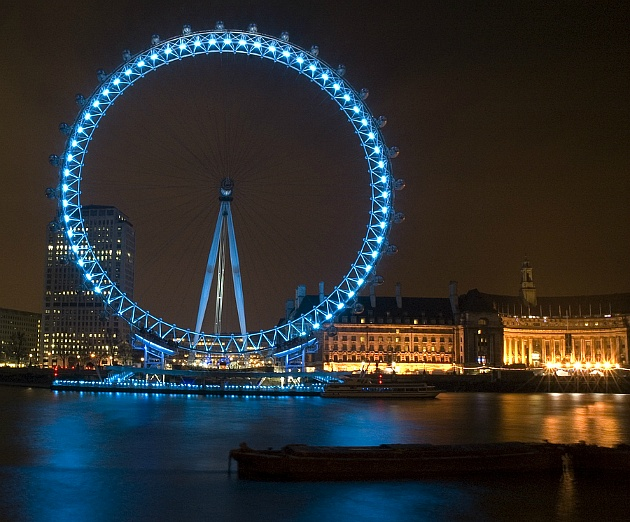

자유의 여신상(自由의 女神像, 영어: Statue of Liberty 스태추 오브 리버티, 프랑스어: Statue de la Liberté 스타튀 드 라 리베르테)은 미국 뉴욕 리버티섬에 있는 건축물로, 뉴욕을 상징하는 대표적인 건축물이며, 세계를 밝히는 자유(영어: Liberty Enlightening the World 리버티 인라이트닝 더 월드, 프랑스어: La liberté éclairant le monde 라 리베르테 에클레랑 르 몽드)라는 이름으로, 프랑스가 19세기 말에 미국의 독립 100주년을 축하하기 위해 제작한 동상이다.

에펠 탑(프랑스어: Tour Eiffel, [tuʁ ɛfɛl], 영어: Eiffel Tower)은 1889년 파리 마르스 광장에 지어진 탑이다. 프랑스의 대표 건축물인 이 탑은 격자 구조로 이루어져 파리에서 가장 높은 건축물이며, 매년 수백만 명이 방문할 만큼 세계적인 유료 관람지이다. 이를 디자인한 프랑스 공학자 및 건축가 귀스타브 에펠의 이름에서 명칭을 얻었으며, 1889년 프랑스 혁명 100주년 기념 세계 박람회의 출입 관문으로 건축되었다. 에펠 탑은 그 높이가 324 m(1,063 ft)이며, 이는 81층 높이의 건물과 맞먹는 높이이다. 1930년 크라이슬러 빌딩이 완공되기 전까지는 세계에서 가장 높은 건축물이었다. 방송용 안테나를 제외하고도, 2004년 지어진 미요 교에 이어 프랑스에서 두 번째로 높은 구조물이다. 관광객을 위해 3개 층이 개방되어 있다. 첫 번째 층과 두 번째 층 까지는 표를 구입해 계단과 엘리베이터를 통해 올라갈 수 있다. 첫 번째 층까지의 높이와 첫 번째 층부터 두 번째 층까지의 높이는 각각 300 계단이 넘는다. 가장 높은 세 번째 층은 엘리베이터로만 올라갈 수 있다. 첫 번째 층과 두 번째 층에는 음식점이 운영중이다. 에펠 탑은 여러 영화에서 배경 화면으로 자주 보여지면서 프랑스와 파리 모두를 나타내는 가장 눈에 띄는 상징물이 되었다. 밤이 되면, 매 시각 정각부터 약 10분간 에펠탑이 반짝 거리는 쇼를 볼 수 있다.

런던 영국런던 아이(영어: London Eye)는 영국 런던 템즈 강변의 남안에 위치한 대형 대관람차이다. '밀레니엄 휠' (Millennium Wheel, 스폰서를 표기할 때에는 'lastminute.com London Eye')이라고도 부른다. 현재 유럽에서 가장 큰 대관람차이며, 해마다 300만 명이 넘는 관광객이 방문해 영국의 대표적인 관광지로 꼽히는 동시에, 다수의 대중문화 작품에서 등장하는 건물로 이름나 있다. 런던 아이의 높이는 135m, 원반의 직경은 120m에 달한다. 2000년 완공 당시 세계에서 가장 큰 대관람차이기도 하였으나, 2006년 중국 난창의 난창지싱 (160m), 2008년 싱가포르 플라이어 (165m), 2014년 미국 라스베이거스의 하이 롤러 (167m)에 기록을 넘겼다. 허나 중국 난창이나 싱가포르에 있는 대관람차와는 달리 런던 아이는 원반 한쪽에만 A형 구조물로 받쳐져 있다는 특징을 지니고 있어, '세계에서 가장 큰 외팔보형 대관람차'로 홍보되고 있다. 또한 바퀴살에 해당하는 중간 기둥들이 파이프가 아닌 와이어로프로 연결되어 있기 때문에 중간이 뻥 뚫린 것처럼 보인다. 런던 아이는 런던 램버스구 카운티홀에 위치한 주빌리 가든 서쪽 끝에 자리잡고 있다. 템스 강의 남안을 따라 웨스트민스터교와 헝거퍼드교 사이에 위치해 있는데, 이 자리는 본래 '돔 오브 디스커버리' (Dome of Discovery)라 하여 1950년대 런던에서 개최된 박람회장 부지이기도 했다. 한편 런던 아이는 런던 시를 내려다볼 수 있는 가장 높은 전망대로 이름나 있었다. 지금은 2013년 2월 완공된 더 샤드의 72층 전망대 (245m)가 생기면서, 런던에서 유이한 전망이 되었다. 2020년 3월, 런던 아이가 완공 20주년을 맞이하면서 영국의 온라인 여행 예매 서비스인 '라스트미닛 닷컴' (lastminute.com)과 스폰서 계약을 맺고, 대관람차 탑승실에 특별 이벤트 공간을 꾸며놓았다. 내부를 펍으로 꾸며놓은 탑승실, 웨스트엔드 극장 무대로 꾸며놓은 탑승실, 런던의 왕립공원 여덟 곳을 대표하는 꽃밭으로 꾸며진 정원 탑승실 등으로 이뤄졌다.